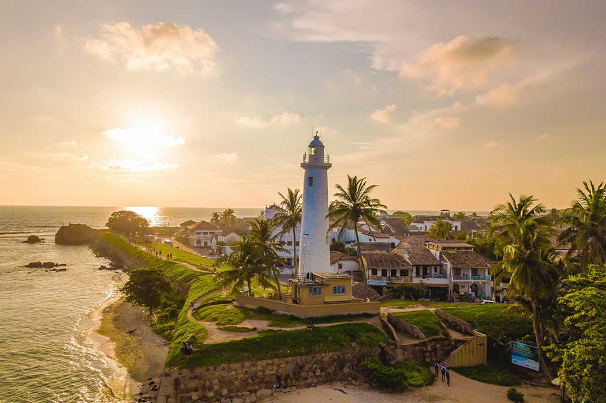
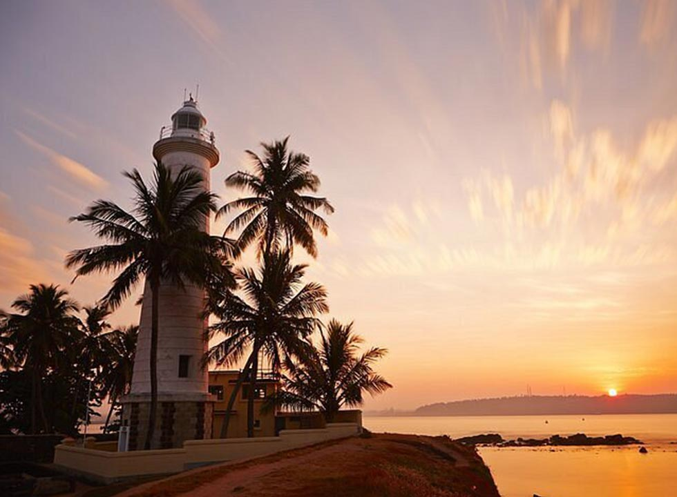
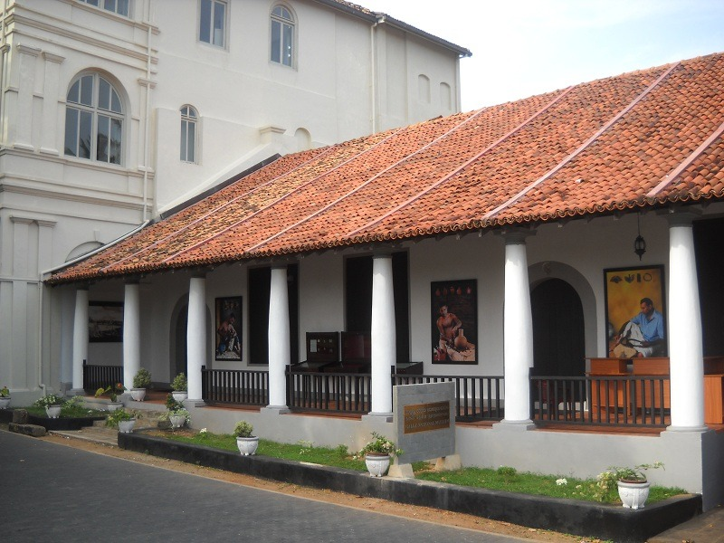

Key Attractions

Galle Fort, a UNESCO heritage site, features stunning architecture, seaside views, and historic streets.

The iconic Galle Lighthouse stands proudly on the edge of the fort walls with panoramic ocean views.

Nearby beaches offer golden sands, calm waters, and perfect sunset photography opportunities.

Museums around Galle display colonial artifacts, maritime history, and cultural treasures.